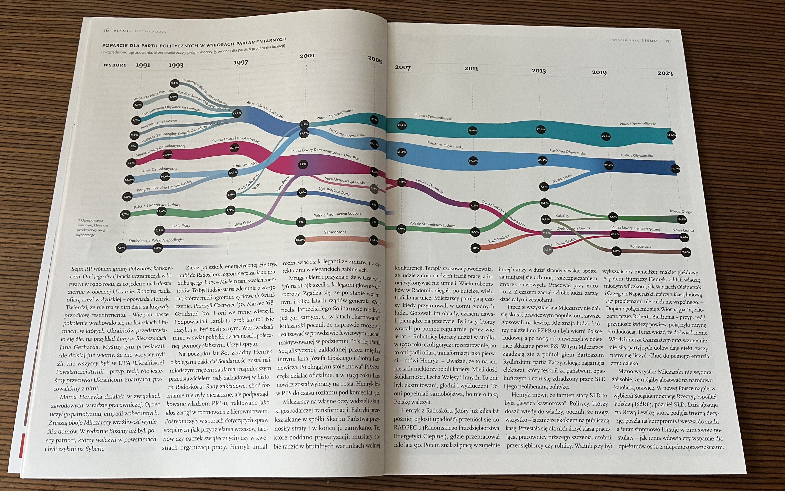
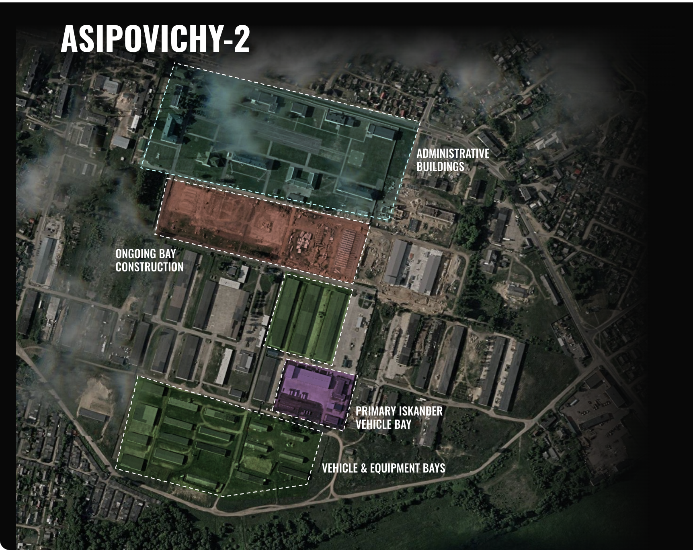
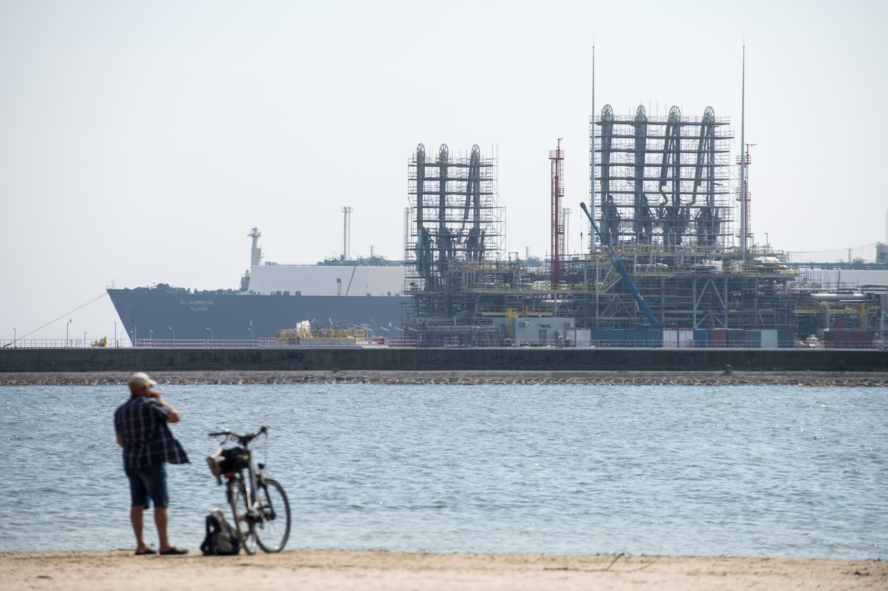
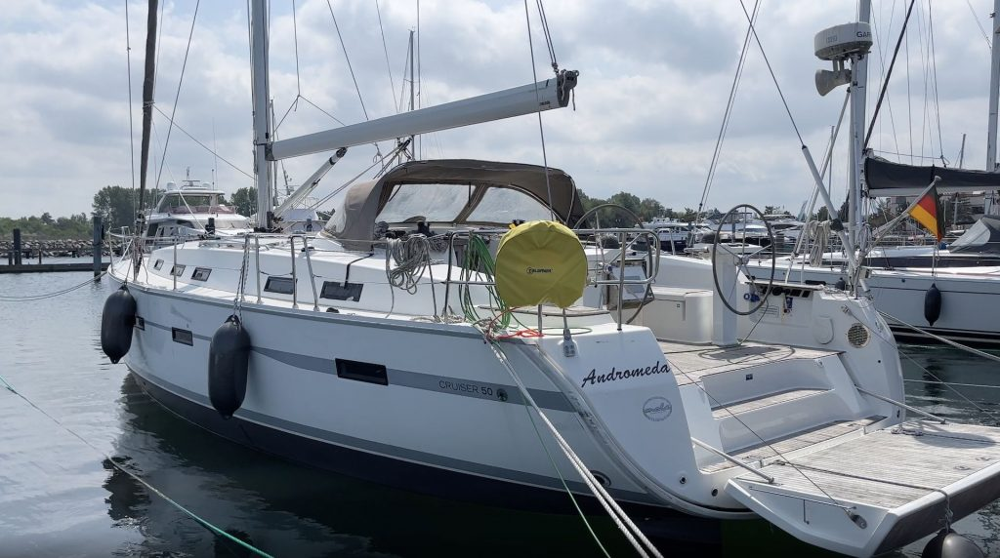
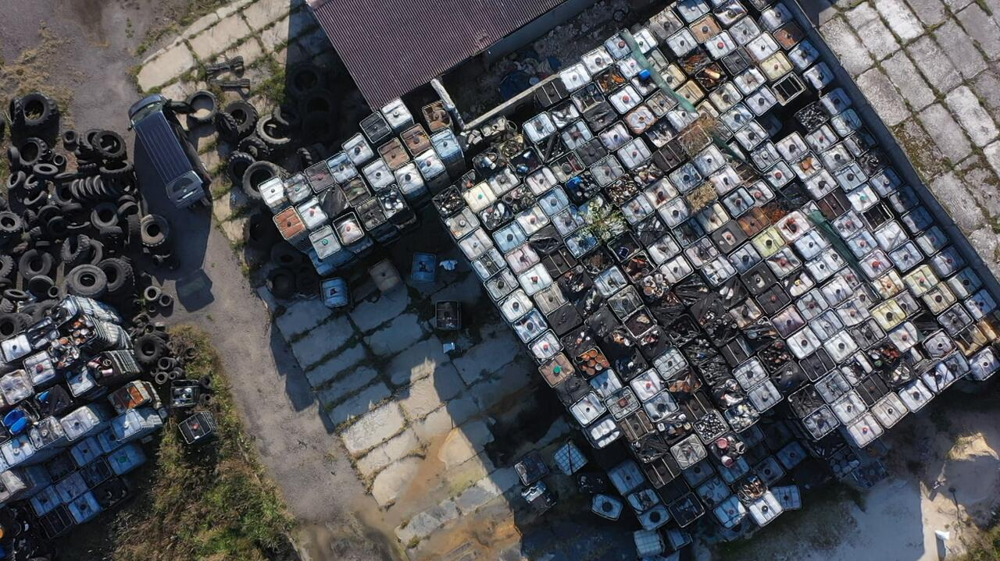
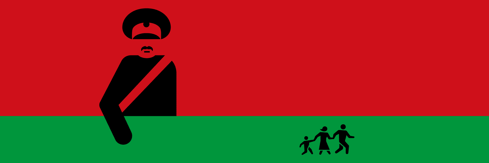
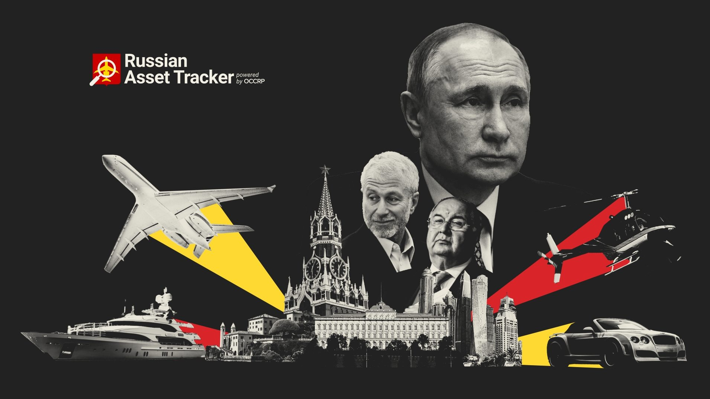

An interactive scrollytelling piece built with custom JavaScript injected into a CMS that didn't support it. I added a moving-camera effect to guide readers through a dense network of names and connections across several countries. The Lithuanian prosecutor's office went public two days early, so I finished it in twenty minutes instead of two days. Named Innovation of the Year in media by Wirtualne Media in 2026.

Three decades of Polish politics, visualized
A Sankey diagram tracing thirty years of Polish political party history, built from Wikipedia election data scraped into Flourish and exported as SVG, then refined in Illustrator and InDesign for print. The same story also needed a radar diagram of political preferences. My first print commission, and the day I learned InDesign.
I scraped 500,000 messages from 1,500 Telegram channels using Telethon and a snowballing method, then built a Doc2Vec classifier trained on 300 manually labeled drug ads to identify advertisements at scale. String matching against a custom drug slang library helped quantify substance frequency, while InPost and BLIK mentions mapped how the market actually works. Presented at Dataharvest 2025 and now being replicated for Germany.

We used high-resolution satellite imagery to map Russian military base activity along NATO's eastern border. GRU special forces in Kaliningrad are being trained for sabotage operations, and new nuclear weapons infrastructure is taking shape in Belarus.

I used QGIS and official shelter location data from local authorities to map how well protected residents of Sumy region's largest cities actually are during air raid alerts. Visualized in Illustrator and published on Instagram. Made for my home region in Ukraine, dedicated to Kordon.Media.

Orlen presents itself as a green energy leader. We dug into company filings and public data and found a company fighting to preserve oil refining profits, using Poland's slow green transition as cover. Published as a scrollytelling piece.
A database of 20,000 purchases from the neo-Nazi webshop Midgård was leaked by the antifascist organization AFA. We analyzed the customer register to map how widespread its Central European sales network is, identifying buyers across Poland, Czechia, and Slovakia.
Leaked documents show how the Russian Red Cross, legally required to stay neutral, became a vehicle for Kremlin propaganda. We traced how Moscow uses it to extend influence abroad under the cover of the International Red Cross brand.

We tracked the yacht Andromeda, suspected in the Nord Stream pipeline explosions, by cross-referencing satellite imagery and AIS vessel tracking data. On-ground OSINT reporting led us to a Kyiv businessman whose company had rented the boat.

We automated 3,000 FOIA requests to map illegal waste dumps across Poland, then used an LLM to extract location data from PDF responses. Ground-truthed on site, the dataset revealed nearly 200 hazardous dump sites nationwide — three of them caught fire in May 2024 alone.

We identified signals intelligence (SIGINT) equipment mounted on rooftops of Russian diplomatic facilities across Europe. Verified through satellite imagery and open-source research, the same setup appeared from Warsaw to Budapest, Stockholm, and Brussels.
Leaked Kremlin documents reveal the infrastructure behind Putin's reelection: a pan-Russian propaganda network, internet censorship machinery, and coordinated information warfare operations. We analyzed the files as part of a cross-border team.
We mapped a network of pro-Russian and alt-right disinformation sites operating across Central and Eastern Europe. Using network analysis, we showed how these sites cross-reference each other to amplify Russian narratives and spread conspiracy theories in local languages.

During eight years of PiS rule, Polish forest districts funneled tens of millions in public funds to churches, nationalist organizations, and entities connected to the foresters themselves. We tracked the money using public spending data and a custom text classifier to categorize thousands of transfers.

We traced financial flows linking companies in the Lukashenko regime's orbit to migrant smuggling networks bringing people from the Middle East into Europe. OSINT and on-ground reporting uncovered direct ties between the regime and the traffickers.

A joint OCCRP investigation with 25 newsrooms tracking the assets of Russian oligarchs on Navalny's Anti-Corruption Foundation list of 35. We covered Poland and Central Europe, cross-referencing property records, corporate filings, and public databases.